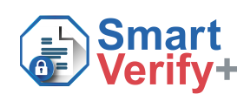

Reference: 36491820-15-DZSK
| Data | Details | Verified |
|---|---|---|
| Student Full Name | ABDELHAMID MOHAMED ELSHAZLY | |
| Issuing Body | OTHM | |
| Date of Award | 26/08/2025 | |
| Qualification Title | OTHM Level 7 Diploma in Occupational Health and Safety | |
|
The details match the DC System, this document is verified
|
||